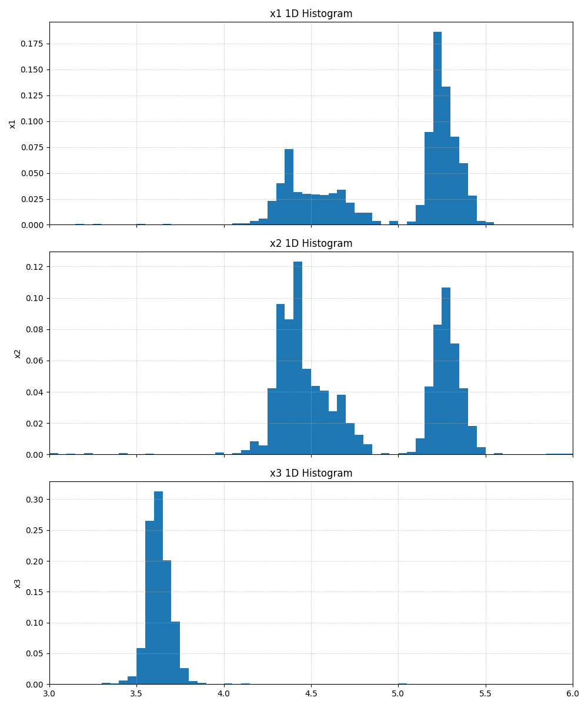

チュートリアル：ポスト処理ツールの使い方¶
PAMC計算を実行する
例として TRHEPD 順問題ソルバー (odatse-STR) の計算例を取り上げます。 パラメータの次元は 3 で、温度点は T=1.0 から 1.0e-6 まで対数スケールで 51点とっています。 各 annealing の MCMC ステップ数は 20。 レプリカ数はプロセスあたり 100 x 4 MPIプロセスとします。
計算結果は output 以下に出力されます。 MPIプロセスごとの MCMC の計算ログは output/{rank}/result_T{index}.txt に温度点ごとに分割されて書き出されます。また、f(x)の期待値と分散、分配関数の値が output/fx.txt に出力されます。
注釈
export_combined_files を True にしている場合はログが combined.txt に集約されている。
python3 extract_combined.py -t result.txt -d output
を実行して result.txt を取り出す。その後、result.txt を温度点ごとに分割する。
extract_combined.py は特定のタグで始まる行を抽出するツールで、以下のオプションが使用可能：
-t, --tag: 抽出対象のタグ(必須)-d, --data_dir: データファイルが格納されているディレクトリ
詳細は extract_combined.py を参照。
注釈
separate_T が False の場合はログが result.txt に出力される。
python3 separateT.py -d output
を実行して温度点ごとのファイル result_T{index}.txt に分割する。
separateT.py は MCMC のデータファイルを温度ごとに分割するツールで、以下のオプションが使用可能：
-d, --data_dir: データファイルが格納されているディレクトリ-t, --file_type: 分割する対象のファイル名 (指定がない場合は各ディレクトリ内の result.txt を処理)
詳細は separateT.py を参照。
model evidence を計算する
model evidence \(\log P(D;\beta)\) は次の式で表されます。
\[\log P(D;\beta) = \log\left(\dfrac{Z_\beta}{Z_{\beta_0}}\right) - \log V_\Omega + \sum_\mu \dfrac{n_\mu}{2}\log\left(\dfrac{\beta w_\mu}{\pi}\right)\]output/fx.txt に出力された分配関数 \(\log Z/Z_0\) の値を用いて model evidence を計算します。その際に、事前確率の規格化因子である探索空間の体積 \(V_\Omega\) とデータ点の数 \(n\) を指定します。
今の例では探索空間は z1, z2, z3 についてそれぞれ [3.0, 6.0] の領域をとっています。データ点の数 (experiment.txt の行数) は 70 です。
python3 plt_model_evidence.py -V 27.0 -n 70 output/fx.txt
model evidence の値は model_evidence.txt に書き出されます。また、beta についてプロットした図が model_evidence.png に出力されます。
plt_model_evidence.py は以下のオプションを使用できます:
-V, --Volume: 探索空間の体積 \(V_\Omega\)-n, --ndata: データ点の数(必須)-o, --output: プロットを出力するファイル名。出力形式は拡張子を元に判断します。
詳細は plt_model_evidence.py を参照。

model evidence をプロットした図。最大値を与える beta は beta= \(1.91\times 10^5\) (Tstep=44)。¶
温度点ごとに探索データをまとめる
output/{rank}/result_T{index}.txt に出力されている MCMC ステップの情報から、annealing が終了した時点の replica の配置を取り出し、温度点ごとのファイルにまとめます。
python3 summarize_each_T.py -d output -o summarized
summarized/ 以下に result_T{index}_summarized.txt として書き出される。
summarize_each_T.py は各温度点でのレプリカ配置データを抽出してまとめるツールで、以下のオプションが使用可能：
-d, --data_directory: MCMC データファイルが格納されているディレクトリ-o, --export_directory: 出力先ディレクトリ
-i, --input_fileオプションを利用すると、PAMC計算に用いたTOML設定ファイルからレプリカ数などのパラメータを自動的に取得できます。詳細は summarize_each_T.py を参照。
1次元および2次元周辺化ヒストグラムを作成する
replica配置のデータを用いて、重み付けされた事後確率分布 \(P(z_i|D;\beta) = \dfrac{P(D|z_i\beta) P(z_i)}{P(D;\beta)}\) をプロットします。
各 \(z_i\) に沿って周辺化した1次元ヒストグラムを作成するには
python3 plt_1D_histogram.py -d summarized -o 1dhist -r 3.0,6.0
を実行します。summarized/ のデータファイルそれぞれについてヒストグラムが作成され、1dhist/ 以下に 1Dhistogram_result_T{index}_beta_{beta}.png (温度の範囲を bmin, bmax で指定してPAMC計算を実行した場合) または 1Dhistogram_result_T{index}_T_{T}.png (温度の範囲を Tmin, Tmax で指定してPAMC計算を実行した場合) というファイル名で書き出されます。値の範囲は 3.0〜6.0 にとっています。
plt_1D_histogram.py は以下の主要なオプションを使用できます:
-d, --data_dir: データファイルが格納されているディレクトリ-o, --output_dir: 出力先ディレクトリ-r, --range: 変数の範囲を指定(カンマ区切りの「最小値,最大値」形式)-b, --bins: ヒストグラムのビン数(デフォルト: 60)-f, --format: 出力ファイル形式(カンマ区切りのリスト、デフォルト: "png")--config: 設定ファイル(TOML形式)のパス--params: PAMC計算に使用したパラメータファイルのパス
設定ファイルを使用すると、オプションをまとめて設定が可能になります。
詳細は plt_1D_histogram.py を参照。
 1次元周辺化ヒストグラムの出力例。(Tstep=22, \(\beta=4.365\times 10^2\) の場合)¶
2次元に周辺化したヒストグラムを作成するには
python3 plt_2D_histogram.py -d summarized -o 2dhist -r 3.0,6.0
を実行します。z1, z2, z3 の組み合わせ (z1,z2), (z1,z3), (z2,z3) についての2次元ヒストグラムが作成され、2dhist/ 以下に 2Dhistogram_result_T{index}_beta_{beta}_x1_vs_x2.png 等のファイル名で書き出されます。(field_list を指定しない場合、軸の名称は x1, x2, ... になります。)
plt_2D_histogram.py は plt_1D_histogram.py と同様のオプションに加えて、以下の機能があります。
2変数の組み合わせごとにヒストグラムを生成
対数スケールでのカラーマッピングによる確率密度の可視化
出力ファイル名の命名規則は 2Dhistogram_[ファイル名]_[x軸ラベル]_vs_[y軸ラベル].[フォーマット] となります。
例: 2Dhistogram_result_T44_beta_1.91e+05_x1_vs_x2.png
詳細は plt_2D_histogram.py を参照。
2次元周辺化ヒストグラムの出力例。(Tstep=22, z1-z2 軸についてのプロット)¶